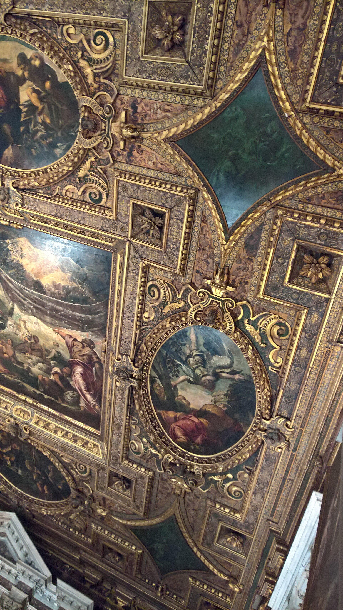
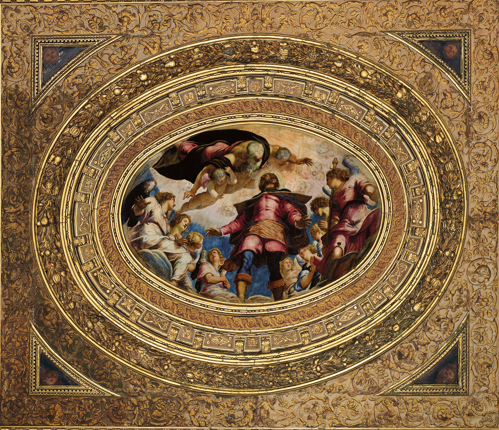
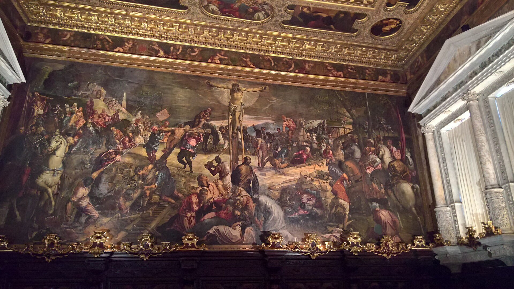

威尼斯六大“大会堂”（Scuole Grandi）中最著名的一座，供奉瘟疫主保圣洛克。1564-1588 年间丁托列托在此绘制了 60 余幅油画，覆盖大厅、上层与圣器室--全球最大的单艺术家装饰循环之一。建筑本身是威尼斯市民社会（慈善行会制度）的纪念碑。
看点路线
Il Percorso
- 1一层大厅：旧约场景天花板（铜蛇、摩西击石、吗哪）--“饥饿与口渴”的瘟疫隐喻
- 2上层大厅：新约循环 + 天花板的悬浮构图
- 3圣器室《基督受难》：5.36 x 11.84 米的巨幅杰作
- 4大厅提供的镜子长凳：躺看天花板的“文艺复兴观影体验”
重点展品
La Scuola · 6 件必看

一层大厅天花板：旧约的饥渴
铜蛇、摩西击石出水、天降吗哪--三个“解渴与解饿”的旧约奇迹，对应瘟疫之城的渴望。色彩已走向丁托列托标志性的暗调戏剧。
上层大厅：新约循环
天花板的耶稣生平与墙面的受难叙事：构图的复杂度与人物密度令人目不暇接。丁托列托用蜡模与悬挂的小盒子研究仰视透视--这些天花板是“视错觉学”的巅峰实验。

《圣洛克荣光》
当年竞赛的“抢先之作”：丁托列托不等评审、连夜安装完成的圆顶画。以“献给圣人的礼物不可撤回”为由锁定了委托--艺术史上最著名的一次竞标战术。

《基督受难》
圣器室的巨幅杰作：十字架的 X 形光轴、分散的人群、几乎隐没的基督--受难题材被重构为一场安静的总崩溃。与任何同题材对比着看，你会明白什么叫“叙事的暴力美学”。
立面：两层叙事
下层保留哥特残余，上层是文艺复兴的窗列节奏--“同一栋楼，两个世纪”的立面教科书。与对面弗拉里教堂的赤砖立面构成广场的对话。
大会堂制度
威尼斯独有的世俗慈善行会系统：六大行会负责孤儿、寡妇、穷人救助与殡葬--在国家与教会之间的“第三部门”。圣洛克行会至今运作，门票收入继续用于慈善。
历史故事
Le Storie
壹一次“抢先安装”的营销
1564 年，圣洛克大会堂为圣器室天花板举办竞赛：邀请诸位画家提交草图。丁托列托的应对方式载入艺术史--他不交草图，而是测量了尺寸后，连夜把自己画好的成品直接安装上了天花板。
面对评委的抗议，他回答：这是献给圣洛克本人的礼物--送给圣人的东西不能撤回。行会无可奈何，只好接受。
这次“营销”的后续更精彩：他借此锁定了行会的信任，此后 24 年间接下了整栋楼的装饰合同。
贰一份聪明到“狡猾”的合同
丁托列托与行会的合作方式很特别：不按件计价，而是按年领取固定薪水、承诺每年交付一定数量的画作--画作所有权归行会，但图纸与名声归他。
历史学家估算他为此楼工作了约 20 余年（1564-1588 间断续），产量惊人：两层楼的墙面与天花板几乎被他一人包办。
与委罗内塞的“贵价大单”模式相比，丁托列托选了“年金模式”--现金流稳定，且垄断了一个机构。生意与艺术两手都硬。
叁圣洛克：瘟疫主保
圣洛克（San Rocco / Roch）是 14 世纪的法国贵族子弟：他放弃家产朝圣罗马，途中投身照护瘟疫病人，自己也被感染，躲进森林靠一只狗送面包活了下来--因此他的图像志总带着狗、面包与腿上的疮。
威尼斯在 15 世纪晚期把他奉为对抗瘟疫的主保圣人之一，1478 年成立圣洛克慈善行会--会址就是这座大楼。
行会大厅的每一幅画都在呼应这个主题：饥、渴、病、救赎--丁托列托的旧约天花板是“给瘟疫之城的视觉祷文”。
肆Scuole Grandi：威尼斯的“第三部门”
中世纪与文艺复兴的威尼斯有六大“大会堂”（Scuole Grandi）：世俗信徒组成的慈善行会，负责孤儿救济、寡妇抚恤、穷人殡葬与赎回被俘船员。
它们不属于教会也不属于国家，经费来自会员会费与捐赠--这一制度是威尼斯市民社会的支柱，也是“公民自治”的早期范本。
圣洛克行会至今合法存在并运作：门票收入继续用于慈善--一座五百年不换使命的 NGO。
伍天花板的“仰视陷阱”
上层大厅的天花板由十几幅悬浮构图组成：人物自下而上飞升、透视剧烈缩短--这是“di sotto in sù”（从下往上看）视错觉的巅峰应用。
据记载，丁托列托用蜡做小模型、把它们吊在工作室天花板上研究仰视角度--这是 16 世纪版的“3D 建模”。
大厅提供的镜子长凳不是为了休息：躺着看天花板才是这些画的正确打开方式。策展人把这个“观看设计”保留了几百年。
陆《受难》：安静的总崩溃
圣器室的《基督受难》（1565，5.36 x 11.84 米）是丁托列托 30 多岁的代表作：十字架的 X 形光轴下，各色人群散布画面--士兵、赌徒、哀悼者、漠不关心者。
与传统受难题材“聚焦痛苦”不同，这幅画把受难变成一个“世界的抽屉”：每个人都有自己的事，神之死只是背景。这种叙事的冷静几乎预示了现代电影的群像调度。
艺术史家 Boschini 当年就写道：看这幅画时，你感觉自己不在看画，而在现场。
柒与委罗内塞的赛道
丁托列托与委罗内塞是同代对手：一个快而暗（丁托列托的产量与戏剧），一个慢而亮（委罗内塞的华丽与色彩）。两人常年在威尼斯的宫殿与教堂里“抢单”。
一个流传的段子：委罗内塞说丁托列托的画“像用蘸了颜料的拖把画的”；丁托列托回应委罗内塞的画“是给糖果店做的装饰”。两人的最佳作品恰好都在教堂里当邻居。
在圣洛克（丁托列托主场）看完后去学院美术馆看委罗内塞的《利未家的宴会》--两位巨匠隔空对线。
捌立面的两个世纪
大会堂的立面本身就是“时间线”：下层由 Bartolomeo Bon 起建于 1517 年（保留哥特残余），上层于 1570 年代续建（文艺复兴窗列）。
这种“下半哥特、上半文艺复兴”的组合是威尼斯的常态--城市不拆旧楼，只往上加新层。与对面弗拉里教堂的赤砖立面合看，是圣洛克广场（Campo San Rocco）的免费建筑课。
底层拱廊现在仍是行会的入口与售票处--五百年没换过功能。
玖2019：丁托列托之年
2018-2019 年（丁托列罗诞辰 500 周年），华盛顿国家美术馆与威尼斯双年展联合举办了史上最大的丁托列托回顾展，圣洛克大会堂也完成了新一轮修复。
修复师的报告揭示了一个细节：许多画面上有一层极薄的“提亮釉”--丁托列托在暗调底色上做光学增强，效果类似现代屏幕的“局部调光”。
这位“最快的画家”（同时代人的绰号）其实也是“最细的工匠”--速度之下藏着一层一层的耐心。
拾与弗拉里的一小时双展线
圣洛克大会堂与弗拉里教堂同在圣波罗区，步行 2 分钟--把它们排在同一小时是威尼斯艺术日的黄金组合。
动线建议：先圣洛克（丁托列托的绘画厅，约 50 分钟）-> 过广场进弗拉里（提香的巨构与哥特内殿，约 50 分钟）-> 出来在 Campo San Rocco 的咖啡馆坐下复盘--两家隔广场对望，两个极端的艺术世界。
一张“丁托列托 + 提香”的联票不存在，但这一小时的收获超过多数美术馆一整天。
参观贴士
Consigli Pratici
- 与弗拉里教堂联游：同在 San Polo 区，步行 2 分钟--“丁托列托 + 提香”的一小时双展线
- 镜子长凳不是噱头：躺上去看天花板是这些画的正确打开方式
- 音频导览含叙事线（旧约->新约->受难），建议按顺序听
- 上层大厅的光线下午最好；旺季上午人少
- 对面的小教堂 San Rocco 本身免费，也有丁托列托作品
顺路同游
Da Non Perdere